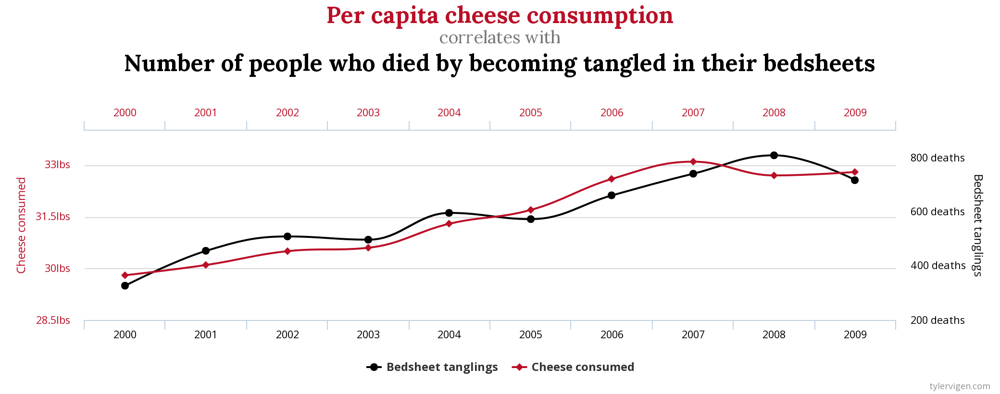

n = 1000
z = rbernoulli(n, 0.5)
x = rbernoulli(n, (1-z)*0.1 + z*0.9)
y = rbernoulli(n, (1-z)*0.1 + z*0.9)
table(x,y) y
x FALSE TRUE
FALSE 433 94
TRUE 77 396explorando questões de intuição e probabilidade na busca científica por causalidades
Fonte: Enc. Metallum (2016), after Jakub Marian; World Happiness Report (2022). Chart by Piotr Migdał
Correlation does not mean causation
Correlação não implica causação
[https://www.youtube.com/watch?v=mBEA7PKDmiY]


“Todos os modelos são errados, mas alguns são úteis”
(George E. P. Box)
Dados reais
\(\Downarrow\)
modelo (científico/estatístico)
\(\Downarrow\)
estimativa do mundo real
\(X \leftarrow Z \rightarrow Y\)
\(X \leftarrow Z \rightarrow Y\)
\(X \leftarrow Z \rightarrow Y\)
\(X \leftarrow Z \rightarrow Y\)
\(X \leftarrow Z \rightarrow Y\)
\(X \rightarrow Z \rightarrow Y\)
\(X \rightarrow Z \rightarrow Y\)
\(X \rightarrow Z \rightarrow Y\)
\(X \rightarrow Z \rightarrow Y\)
\(X \rightarrow Z \rightarrow Y\)
\(X \rightarrow Z \leftarrow Y\)
\(X \rightarrow Z \leftarrow Y\)
\(X \rightarrow Z \leftarrow Y\)
\(X \rightarrow Z \leftarrow Y\)
\(X \rightarrow Z \leftarrow Y\)
Forquilha – Estratifique!
Colisor – Estratifique!
Mediador – Não estratifique!
Descendente – Não estratifique!
| Predictor | Estimates | CI | p |
|---|---|---|---|
| (Intercept) | 0.79 | 0.78 – 0.81 | <0.001 |
| grupo[trilingue] | 0.03 | 0.01 – 0.04 | 0.002 |
| tempo[2] | 0.01 | -0.01 – 0.03 | 0.253 |
| tempo[3] | 0.07 | 0.04 – 0.09 | <0.001 |
| — | — | — | — |
| Observations | 600 | ||
| Rˆ2 / Rˆ2 adjusted | 0.079/0.075 |
brms::brm(simdata,
nota ~ grupo + tempo,
priors = c(prior(normal(0.83, 0.1), class = Intercept),
prior(normal(0, 0.1), class = b),
prior(normal(0, 0.01), class = sigma)))| Predictor | Estimates | CI (95%) |
|---|---|---|
| (Intercept) | 0.79 | 0.78 – 0.81 |
| grupo[trilingue] | 0.03 | 0.01 – 0.04 |
| tempo[2] | 0.01 | -0.01 – 0.03 |
| tempo[3] | 0.07 | 0.05 – 0.09 |
| — | — | — |
| Observations | 600 | |
| Rˆ2 Bayes | 0.082 |
Kupske, F. F., Lima Jr, R. M., & Alves, U. K. (2023). A comparison between Full Time Equivalent and Length of Residence as measurements of time in bilingual speech research: the case of first language attrition. Ilha do Desterro, 76(3), 177-198.
LIMA JR, R. M. (2022). A dynamic account of the development of English (L2) vowels by Brazilian learners through communicative teaching and through explicit instruction. In: Alves & Albuquerque. Second Language Pronunciation: Different Approaches to Teaching and Training, Berlin: De Gruyter Mouton, 147-166.
Lima Jr. & Alves (prelo)